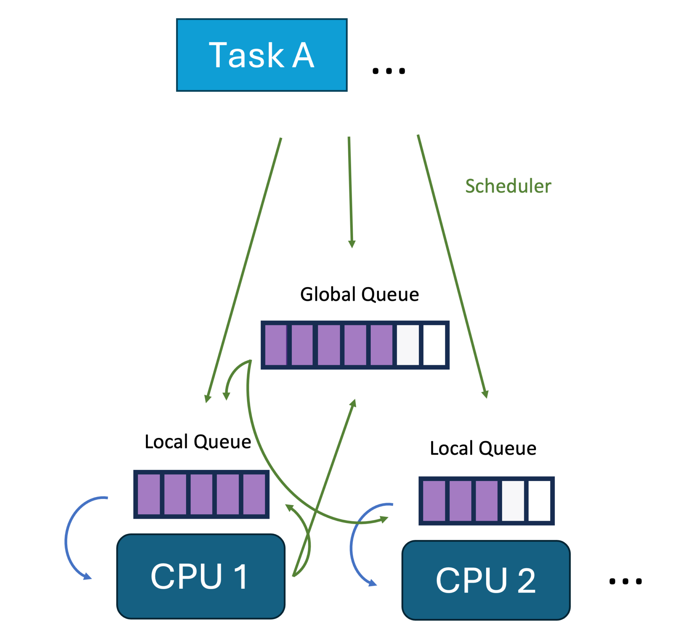
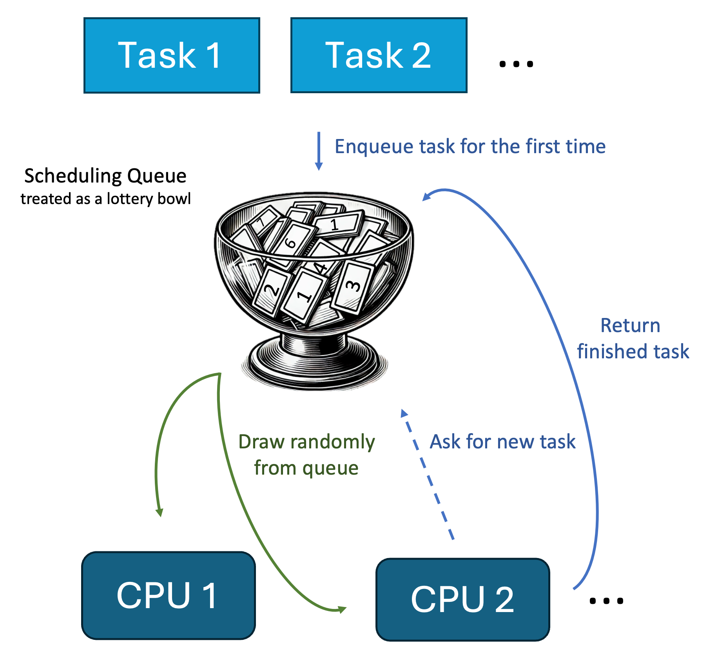
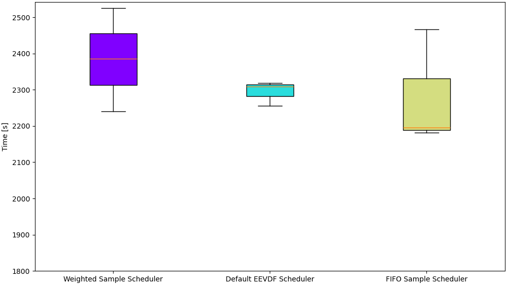

sched_ext — Kernelspace Scheduler¶
See also: Overview · Writing a Scheduler · Callbacks Reference · Cookbook
A kernelspace scheduler runs entirely inside the kernel: every scheduling decision happens in BPF, directly in kernel context, with no round-trip to user space. This gives you the lowest possible latency and the full sched_ext API surface.
The hello-ebpf kernelspace path builds on three types:
SchedulerBase— extendsBPFProgram, implements sensible defaults forinit,dispatch, andexit. Extend it unless you needBPFProgramdirectly.DispatchQueue— a compile-time abstraction over DSQ IDs. Field declarations ofnew DispatchQueue(id)auto-injectscx_bpf_create_dsqintoinit(). All insert/move operations inline to the correct kfuncs.Schedulerinterface — declares the callback signatures. ExtendSchedulerBase implements Schedulerto get IDE support and the correct method signatures.
Blog series — the kernel-side scheduler is introduced in
Part 15: Writing a Linux scheduler in Java with eBPF
and the lottery variant in
Part 17: Writing a lottery scheduler in Java with sched_ext.
Talks: Writing a Linux Scheduler in Java with eBPF (eBPF Summit 2024) · Concurrency Testing Using Custom Linux Schedulers (p99conf 2025)

Example: Lottery Scheduler¶

The lottery scheduler assigns each task a random time slice drawn from a uniform distribution. Tasks that get a longer slice run first (they advance less in a virtual-time DSQ), producing a fair lottery among runnable tasks without per-task bookkeeping.
This is the simplest example that goes beyond a trivial FIFO, because it uses
bpf_get_prandom_u32 and the nrQueued() introspection call, and it extends
BPFProgram directly (instead of SchedulerBase) to show the DSQ setup clearly.
import me.bechberger.ebpf.annotations.Unsigned;
import me.bechberger.ebpf.annotations.bpf.*;
import me.bechberger.ebpf.bpf.BPFProgram;
import me.bechberger.ebpf.bpf.Scheduler;
import me.bechberger.ebpf.bpf.sched.DispatchQueue;
import me.bechberger.ebpf.bpf.sched.EnqFlags;
import me.bechberger.ebpf.runtime.TaskDefinitions.task_struct;
import me.bechberger.ebpf.type.Ptr;
import static me.bechberger.ebpf.runtime.helpers.BPFHelpers.bpf_get_prandom_u32;
@BPF(license = "GPL")
@Property(name = "sched_name", value = "lottery_scheduler")
public abstract class LotteryScheduler extends BPFProgram implements Scheduler {
private static final long SHARED_DSQ_ID = 0;
// Declaring new DispatchQueue(...) auto-injects scx_bpf_create_dsq into init().
final DispatchQueue shared = new DispatchQueue(SHARED_DSQ_ID);
@Override
@Sleepable
public int init() {
// scx_bpf_create_dsq(SHARED_DSQ_ID, -1) is injected here by the compiler plugin
return 0;
}
@Override
public void enqueue(Ptr<task_struct> p, long enq_flags) {
int nr = shared.nrQueued();
// Random slice in [0, 10ms], scaled down if many tasks are waiting
int maxSlice = 10_000_000; // 10ms in ns
int slice = nr > 0
? ((@Unsigned int) (bpf_get_prandom_u32() % maxSlice)) / nr
: ((@Unsigned int) (bpf_get_prandom_u32() % maxSlice));
if (slice == 0) slice = 1_000_000; // minimum 1ms
shared.insert(p, slice, EnqFlags.passThrough(enq_flags));
}
@Override
public void dispatch(int cpu, Ptr<task_struct> prev) {
shared.moveToLocal();
}
public static void main(String[] args) throws Exception {
try (var sched = BPFProgram.load(LotteryScheduler.class)) {
sched.runSchedulerLoop();
}
}
}
Full runnable source:
LotteryScheduler.java
Key differences from a SchedulerBase scheduler:
- You must declare init() explicitly when extending BPFProgram directly —
otherwise the scx_bpf_create_dsq injection has no method to land in.
- @Sleepable is required on init() because scx_bpf_create_dsq is a sleepable
kfunc and the kernel rejects it in a non-sleepable BPF program.
- dispatch is not optional here — SchedulerBase provides a default, but
BPFProgram does not.
Sample schedulers¶
| Scheduler | What it demonstrates |
|---|---|
MinimalScheduler |
Simplest possible FIFO via SchedulerBase |
LotteryScheduler |
Random time-slice lottery (above) |
SimpleScheduler |
FIFO + vtime switchable at runtime |
VTimeScheduler |
Weighted fair-queuing |
NestScheduler |
Idle-CPU nesting with CpuMask |
PriorityScheduler |
Multiple priority-level DSQs |
DeadlineScheduler |
EDF scheduling via vtime = deadline |
PerCpuSchedulerSample |
Per-CPU DSQs via PerCpuSchedulerBase |
TaskStorageScheduler |
Per-task metadata via BPFTaskStorage |
SMTPairScheduler |
SMT-aware pairing for sibling cores |
The @Property annotation¶
| Name | Default | Meaning |
|---|---|---|
sched_name |
"hello" |
Name shown in /sys/kernel/sched_ext/root/ops |
timeout_ms |
30000 |
Watchdog: auto-detaches scheduler if any task is not dispatched for this long |
extra_flags |
0 |
Additional SCX_OPS_* flags, e.g. "SCX_OPS_ENQ_MIGRATION_DISABLED" |
@Property(name = "sched_name", value = "my_sched")
@Property(name = "timeout_ms", value = "5000")
@Property(name = "extra_flags", value = "SCX_OPS_ENQ_MIGRATION_DISABLED")
public abstract class MyScheduler extends SchedulerBase { ... }
DispatchQueue — typed DSQ wrapper¶
DispatchQueue is the primary API for working with DSQs (Dispatch Queues). It is a
pure compile-time abstraction — no C struct is emitted; every method call is inlined by
the BPF compiler plugin at the call site.
Creating a DSQ¶
// Attach to an already-existing DSQ (e.g. the one SchedulerBase.init() created):
final DispatchQueue shared = DispatchQueue.attach(SHARED_DSQ_ID);
// Create a new custom DSQ — scx_bpf_create_dsq() is automatically lifted to init():
static final long MY_DSQ = 1L;
final DispatchQueue myDsq = new DispatchQueue(MY_DSQ);
// Auto-assigned id (≥ 0x1_0000_0000, unique per program):
final DispatchQueue auto = new DispatchQueue();
When a new DispatchQueue(id) field is declared, the annotation processor automatically
injects the scx_bpf_create_dsq(id, -1) call into the program's init() method — you
don't need to write it yourself.
init()override required forBPFProgramsubclassesThe prologue is injected into the
init()method declared on the concrete@BPFclass. If your scheduler extendsSchedulerBase, its inheritedinit()qualifies automatically. If it extendsBPFProgramdirectly, you must declare an explicitinit()override — otherwise thescx_bpf_create_dsqcall is never emitted and the scheduler detaches immediately after loading:
Inserting tasks (FIFO)¶
// FIFO: explicit slice
shared.insert(p, SCX_SLICE_DFL.value(), EnqFlags.passThrough(enq_flags));
// FIFO: slice scaled by current queue depth (good default)
shared.insertScaled(p, EnqFlags.passThrough(enq_flags));
// Fast-path from selectCPU: skip enqueue/dispatch if CPU is idle
DispatchQueue.insertToLocalIfIdle(p, is_idle, SCX_SLICE_DFL.value());
Inserting tasks (vtime / weighted-fair)¶
// Explicit vtime — e.g. EDF: use absolute deadline as vtime key
shared.insertVtime(p, SCX_SLICE_DFL.value(), deadline, EnqFlags.passThrough(enq_flags));
// Clamped vtime (WFQ): prevents sleeping tasks from accumulating credit
shared.insertVtimeClamped(p, vtimeNow.get(), EnqFlags.passThrough(enq_flags));
Never mix FIFO and vtime insertions on the same DSQ.
Dispatching¶
@Override
public void dispatch(int cpu, Ptr<task_struct> prev) {
shared.moveToLocal(); // move one task to the current CPU's local queue
}
Inspection and timing¶
shared.nonEmpty() // true when tasks are waiting
shared.nrQueued() // count of waiting tasks
DispatchQueue.now() // current monotonic time in ns (scx_bpf_now())
DispatchQueue.nrCpuIds() // number of possible CPU ids
EnqFlags¶
EnqFlags wraps the raw enq_flags long from the enqueue() callback:
EnqFlags f = EnqFlags.passThrough(enq_flags); // wrap kernel-supplied flags
EnqFlags f = EnqFlags.empty(); // no flags
boolean isWakeup = f.isWakeup(); // SCX_ENQ_WAKEUP set?
boolean isLast = f.isLast(); // last runnable task on this CPU?
Built-in DSQs¶
DispatchQueue.local() // SCX_DSQ_LOCAL — current CPU's local queue
DispatchQueue.localOn(cpu) // SCX_DSQ_LOCAL_ON | cpu
DispatchQueue.global() // SCX_DSQ_GLOBAL
KickFlags¶
KickFlags wraps the flags argument of DispatchQueue.kickCpu():
DispatchQueue.kickCpu(nestCpu, KickFlags.idle()); // wake only if idle
DispatchQueue.kickCpu(cpu, KickFlags.preempt()); // preempt whatever is running
DispatchQueue.kickCpu(cpu, KickFlags.idle().or(KickFlags.waitForKick()));
| Factory | C value | Meaning |
|---|---|---|
KickFlags.none() |
0 |
No flags |
KickFlags.idle() |
SCX_KICK_IDLE |
Wake only if the CPU is idle |
KickFlags.preempt() |
SCX_KICK_PREEMPT |
Preempt whatever is running |
KickFlags.waitForKick() |
SCX_KICK_WAIT |
Wait for the kick to be processed |
DSQ iteration¶
Iterate over all tasks in a DSQ — useful for work-stealing or re-prioritisation:
import me.bechberger.ebpf.bpf.BPFJ;
import static me.bechberger.ebpf.runtime.ScxDefinitions.bpf_iter_scx_dsq;
// Forward iteration (lowest vtime first):
shared.forEach(it, p -> {
if (!CpuMask.ofTask(p).test(cpu)) return; // skip affinity-constrained tasks
shared.moveFrom(it, p, EnqFlags.empty());
BPFJ._break();
});
// Reverse iteration (highest vtime first):
shared.forEachReverse(it, p -> {
shared.moveFrom(it, p, EnqFlags.empty());
BPFJ._break();
});
BPFJ._break() and BPFJ._continue() work inside the lambda body.
The iterator it is available for moveFrom, moveFromVtime, setMoveSlice, and
setMoveVtime.
CpuMask — typed CPU affinity wrapper¶
CpuMask wraps a read-only const struct cpumask *. It is a pure compile-time
abstraction (@BPFAbstraction) that must be used as a local variable inside a
@BPFFunction body — never as a class field.
Always release borrowed masks with releaseIdle() or release() when done.
import me.bechberger.ebpf.bpf.sched.CpuMask;
@Override
public int selectCPU(Ptr<task_struct> p, int prev_cpu, long wake_flags) {
// Pick any idle CPU from the idle mask
CpuMask idle = CpuMask.idle();
int cpu = idle.pickIdle(0);
idle.releaseIdle(); // always release
if (cpu >= 0) return cpu;
return scx_bpf_select_cpu_dfl(p, prev_cpu, wake_flags, Ptr.of(false));
}
Factories¶
| Factory | Release needed | C expression |
|---|---|---|
CpuMask.idle() |
releaseIdle() |
scx_bpf_get_idle_cpumask() |
CpuMask.idleSmt() |
releaseIdle() |
scx_bpf_get_idle_smtmask() |
CpuMask.idleOnNode(n) |
releaseIdle() |
scx_bpf_get_idle_cpumask_node(n) |
CpuMask.online() |
release() |
scx_bpf_get_online_cpumask() |
CpuMask.possible() |
release() |
scx_bpf_get_possible_cpumask() |
CpuMask.ofTask(p) |
none | p->cpus_ptr |
Operations¶
CpuMask idle = CpuMask.idle();
idle.test(cpu) // true if cpu is set
idle.weight() // number of set CPUs
idle.first() // lowest-numbered set CPU
idle.isEmpty() // true if no CPUs set
idle.intersects(other) // true if at least one CPU in common
idle.pickIdle(0) // pick and claim an idle CPU, or -EBUSY
idle.pickAny(0) // pick any CPU, preferring idle ones
idle.releaseIdle(); // release — always call when done
Checking task affinity¶
CpuMask.ofTask(p) gives a direct view into the task's cpus_ptr — no release needed:
Nest-CPU example (selectCPU + dispatch + tick)¶
@Override
public int selectCPU(Ptr<task_struct> p, int prev_cpu, long wake_flags) {
CpuMask idle = CpuMask.idle();
int nestCpu = findIdleNestCpu(idle);
idle.releaseIdle();
if (nestCpu >= 0) {
DispatchQueue.localOn(nestCpu).insert(p, SCX_SLICE_DFL.value(), EnqFlags.empty());
return nestCpu;
}
boolean is_idle = false;
return scx_bpf_select_cpu_dfl(p, prev_cpu, wake_flags, Ptr.of(is_idle));
}
@Override
public void dispatch(int cpu, Ptr<task_struct> prev) {
shared.moveToLocal();
Ptr<Integer> nestFlag = inNest.bpf_get(cpu);
if (nestFlag != null && nestFlag.val() == 0) {
CpuMask idle = CpuMask.idle();
int nestCpu = findIdleNestCpu(idle);
idle.releaseIdle();
if (nestCpu >= 0) {
DispatchQueue.kickCpu(nestCpu, KickFlags.idle());
}
}
}
See NestScheduler in bpf-samples/ for the full runnable example.
Key scx kfuncs (low-level, use DispatchQueue instead)¶
The raw kfuncs are still accessible directly when you need them. Prefer DispatchQueue
for new code.
| Function | DispatchQueue equivalent |
|---|---|
scx_bpf_dsq_insert(p, id, slice, flags) |
dsq.insert(p, slice, flags) |
scx_bpf_dsq_insert_vtime(p, id, slice, vtime, flags) |
dsq.insertVtime(p, slice, vtime, flags) |
scx_bpf_dsq_move_to_local(id) |
dsq.moveToLocal() |
scx_bpf_select_cpu_dfl(p, prev, flags, &idle) |
still used directly |
scx_bpf_create_dsq(id, node) |
auto-lifted from new DispatchQueue(id) |
scx_bpf_destroy_dsq(id) |
dsq.destroy() |
scx_bpf_dsq_nr_queued(id) |
dsq.nrQueued() / dsq.nonEmpty() |
scx_bpf_kick_cpu(cpu, flags) |
DispatchQueue.kickCpu(cpu, KickFlags.idle()) |
scx_bpf_now() |
DispatchQueue.now() |
scx_bpf_cpuperf_set(cpu, perf) |
DispatchQueue.cpuperfSet(cpu, perf) |
scx_bpf_task_cpu(p) |
still used directly |
scx_bpf_nr_cpu_ids() |
DispatchQueue.nrCpuIds() |
Helper methods available on any Scheduler implementor (no import needed):
CPU selection
- selectCpuDfl(p, prev_cpu, wake_flags) — default idle-CPU selection; returns CPU, no pre-dispatch (safe for vtime DSQs)
- selectCpuDefault(p, prev_cpu, wake_flags) — like selectCpuDfl but pre-dispatches to SCX_DSQ_LOCAL if idle
- selectCpuFifoIdleOrFallback(p, prev_cpu, wake_flags, dsq_id) — idle-CPU selection + fast-path local dispatch (FIFO DSQs only)
Enqueue helpers (deprecated — prefer DispatchQueue)
- dsqInsert(p, enq_flags) — deprecated; use shared.insertScaled(p, EnqFlags.passThrough(enq_flags))
- vtimeEnqueue(p, enq_flags, vtime_now) — deprecated; use shared.insertVtimeClamped(p, vtimeNow, EnqFlags.passThrough(enq_flags))
Stopping / charging
- vtimeCharge(p) — charge elapsed slice to p.scx.dsq_vtime
- scaleByTaskWeight(p, value) — scale value inversely by task weight (useful for vtime accounting)
Filtering
- hasSchedulingConstraints(p) — true if the task has cpumask/affinity constraints; fast-path it to avoid DSQ starvation
- isDescendantOf(p, targetTgid) — true if p is in the process group rooted at targetTgid
- isMigrationDisabled(p) — true if the task cannot migrate between CPUs
Iteration
- bpf_for_each_dsq(dsq_id, iter, flags, lambda) — iterate over tasks in a DSQ (read-only)
- tryDispatchToLocalCpu(iter, p, dsq_id, vtime, enq_flags) — dispatch a specific task from a DSQ iteration
Comparison
- isSmaller(a, b) — unsigned less-than; required for correct vtime comparisons on 64-bit wraparound
Stats and observability¶
Use SchedulerStats to add per-CPU enqueue/dispatch counters with a few lines:
@BPF(license = "GPL")
@Property(name = "sched_name", value = "my_sched")
public abstract class MyScheduler extends SchedulerBase implements Scheduler {
@BPFMapDefinition(maxEntries = 1)
BPFPerCpuArray<Long> enqueuedCounts;
@BPFMapDefinition(maxEntries = 1)
BPFPerCpuArray<Long> dispatchedCounts;
final DispatchQueue shared = DispatchQueue.attach(SHARED_DSQ_ID);
@Override
public void enqueue(Ptr<task_struct> p, long enq_flags) {
shared.insertScaled(p, EnqFlags.passThrough(enq_flags));
SchedulerStats.incrementEnqueued(enqueuedCounts); // BPF-side
}
@Override
public void dispatch(int cpu, Ptr<task_struct> prev) {
shared.moveToLocal();
SchedulerStats.incrementDispatched(dispatchedCounts); // BPF-side
}
// Java-side reads
public long getTotalEnqueued() { return SchedulerStats.totalEnqueued(enqueuedCounts); }
public long getTotalDispatched() { return SchedulerStats.totalDispatched(dispatchedCounts); }
}
Use GlobalVariable<T> for any other BPF ↔ Java shared state:
final GlobalVariable<Boolean> fifoMode = new GlobalVariable<>(true);
// In BPF: read/write via fifoMode.get() / fifoMode.set(v)
// In Java: same API — read/write from user space while the scheduler is running
Per-task storage¶
Use BPFTaskStorage<T> for per-task metadata (kernel-managed, safe under concurrent
task creation/destruction):
@Type
record TaskCtx(long vruntime) {}
@BPFMapDefinition(maxEntries = 1)
BPFTaskStorage<TaskCtx> taskCtx;
final DispatchQueue shared = DispatchQueue.attach(SHARED_DSQ_ID);
@Override
public void enable(Ptr<task_struct> p) {
taskCtx.bpf_task_storage_get(p, new TaskCtx(vtimeNow.get()),
BPF_LOCAL_STORAGE_GET_F_CREATE);
}
@Override
public void enqueue(Ptr<task_struct> p, long enq_flags) {
EnqFlags f = EnqFlags.passThrough(enq_flags);
Ptr<TaskCtx> ctx = taskCtx.bpf_task_storage_get(p, null, 0);
if (ctx == null) {
shared.insertScaled(p, f);
return;
}
shared.insertVtime(p, SCX_SLICE_DFL.value(), ctx.val().vruntime(), f);
}
Or use a plain BPFHashMap<Integer, TaskCtx> keyed by p.val().pid if you prefer
explicit map management.
Exit info¶
SchedulerBase captures the kernel's exit code when the scheduler is detached. After
runSchedulerLoop() returns (or after closing the program), you can inspect it:
try (var sched = BPFProgram.load(MyScheduler.class)) {
sched.runSchedulerLoop();
long code = sched.getExitCode();
// 0 = normal exit; non-zero = error (e.g. watchdog stall)
}
Override onSchedulerExit(long exitCode) to react inline:
@Override
public void onSchedulerExit(long exitCode) {
if (exitCode != 0) {
System.err.println("Scheduler exited with error: 0x" + Long.toHexString(exitCode));
}
}
The default implementation logs a warning when the exit code is non-zero.
Note:
SCX_EXIT_ERROR_STALLin the exit code means the watchdog fired (the scheduler did not dispatch fortimeout_msmilliseconds).
PerCpuSchedulerBase — per-CPU DSQ layout¶
PerCpuSchedulerBase extends SchedulerBase with one dedicated DSQ per logical CPU
plus the shared fallback DSQ:
CPU 0 DSQ (id = PER_CPU_DSQ_BASE + 0) ─┐
CPU 1 DSQ (id = PER_CPU_DSQ_BASE + 1) ─┤─ drained first by dispatch()
... ─┘
Shared DSQ (id = SHARED_DSQ_ID = 0) ──── fallback if per-CPU DSQ is empty
dispatch() drains the per-CPU DSQ for the calling CPU first; if empty, it falls back to
the shared DSQ.
Use dsqInsertLocal(p, enq_flags) to insert into the DSQ of the CPU that p is currently
pinned to. Use the inherited dsqInsert(p, enq_flags) for migratable tasks that can run
anywhere.
@BPF(license = "GPL")
@Property(name = "sched_name", value = "my_per_cpu_sched")
public abstract class MyScheduler extends PerCpuSchedulerBase implements Scheduler {
@Override
public void enqueue(Ptr<task_struct> p, long enq_flags) {
if (isMigrationDisabled(p)) {
dsqInsertLocal(p, enq_flags); // stays on its CPU
} else {
dsqInsert(p, enq_flags); // can migrate freely
}
}
}
See PerCpuSchedulerSample in bpf-samples/ for a runnable example.
Inspecting generated BPF C code¶
The compiler plugin translates your Java scheduler into BPF C before loading. To see the generated code without root:
Or at load time via an environment variable:
This is useful for debugging compiler plugin output or verifying that helper methods are being inlined correctly.
Benchmarks and use cases¶
Scheduler latency benchmark¶
These box-plots from Part 15 compare a hello-ebpf weighted sample scheduler against EEVDF (the default) and FIFO, measured as compilation time — a real workload sensitive to scheduling fairness.

Concurrency testing with custom schedulers¶
Custom schedulers can also be used to make concurrency bugs more reproducible. By controlling task interleaving deterministically, you can force race conditions that would otherwise be probabilistic. See the p99conf 2025 talk:
Blog post: Part 19 — Concurrency Testing Using Custom Linux Schedulers
Talk: Concurrency Testing Using Custom Linux Schedulers — p99conf 2025
Next: Userspace Scheduler